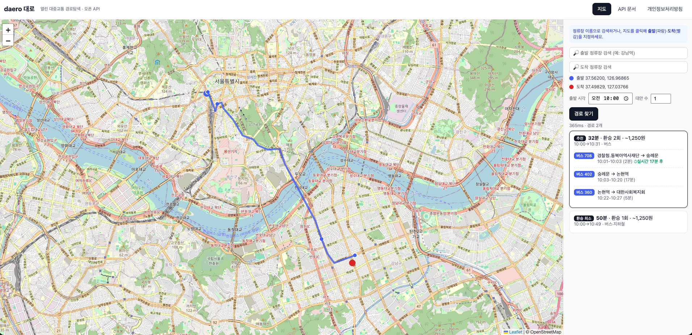
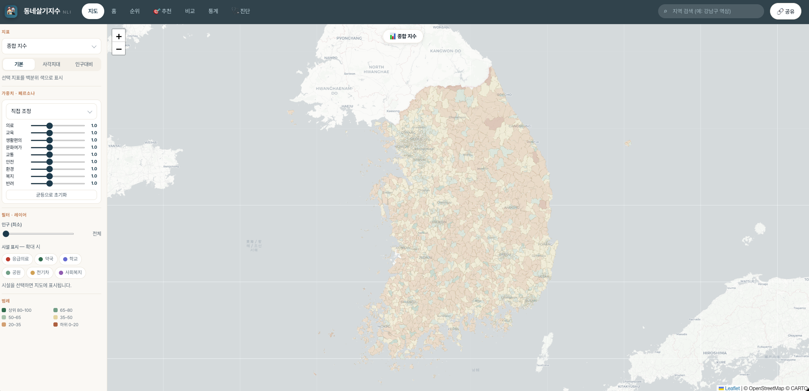
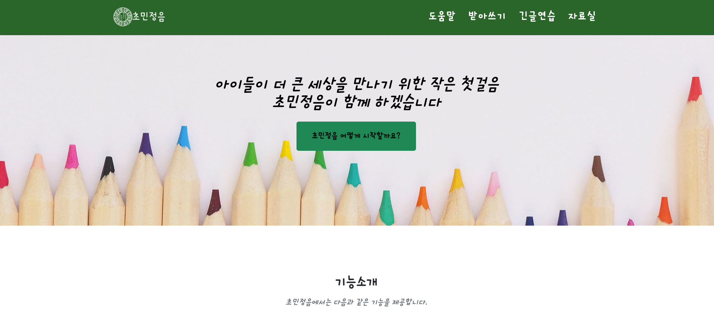

"이 업무는 왜 이렇게 하고 있을까, 이렇게 바꾸면 더 낫지 않을까"에서 시작해 개선을 만드는 개발자. Java/Spring 기반 웹 서비스를 5년간 설계·운영하며, 그 위에 AI를 얹어 사용자가 매일 쓰는 서비스로 만들어 왔습니다.

GTFS 표준 데이터로 전국 대중교통(버스·지하철·철도·여객선) door-to-door 경로를 탐색하는 오픈 API. 자체 RAPTOR 알고리즘 구현, API 키 불필요·자가호스팅.

공공데이터 표준데이터를 전국 행정동 3,559개 단위로 융합해 9개 도메인·32개 지표로 "살기 좋은 동네"를 정량화한 지수 + 지도 대시보드. (공공 데모)

초등 교사용 한글 학습지·교보재 생성 웹. 받아쓰기·긴글 연습·교안 자료실, 한글 음절을 초/중/종성으로 분해하는 REST API. 실서비스 운영 중.